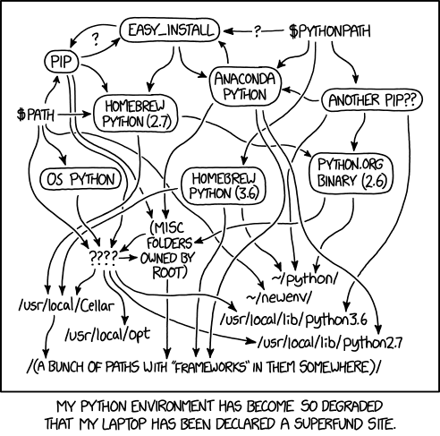

Statistical modelling with big data.
I want to show how to go from fine-grained data (full-count census, mobile phone data at the minute level) to some smaller, aggregated datasets for regressions.
Note that some statistical packages can still perform very well on millions of observations, like fixest in R.
polars is a recent DataFrame library that is available for several languages:
Built to be very fast and memory-efficient thanks to several mechanisms.
Very consistent and readable syntax.
Eager evaluation: all operations are run line by line, in order, and directly applied on the data. This is the way we’re used to.
Lazy evaluation: operations are only run when we call a specific function at the end of the chain, usually called collect().
### Lazy
# Get the data...
my_data = lazy_data
# ... and then sort by iso...
.sort(pl.col("iso"))
# ... and then keep only Japan...
.filter(pl.col("country") == "Japan")
# ... and then compute GDP per cap.
.with_columns(gdp_per_cap = pl.col("gdp") / pl.col("pop"))
# => you don't get results yet!
my_data.collect() # this is how to get resultsWhen dealing with large data, it is better to use lazy evaluation:
The code below takes some data, sorts it by a variable, and then filters it based on a condition:
Do you see what could be improved here?
The problem lies in the order of operations: sorting data is much slower than filtering it.
Let’s test with a dataset of 50M observations and 10 columns:
There is probably tons of suboptimal code in our scripts.
But it’s already hard enough to make scripts that work and that are reproducible, we don’t want to spend even more time trying to optimize them.
Let polars do this automatically by using lazy data.
When we call collect(), polars doesn’t directly execute the code. Before that, it does a lot of optimizations to be sure that we don’t do inefficient operations.
Examples of optimizations:
Workflow:
This only returns the schema of the data: the column names and their types (character, integers, dates, …).
Workflow:
Workflow:
collect() at the end of the code to execute it.Tip
You can see the “query plan” (i.e. all the steps in the code) as it was originally written with my_data.explain(optimized=False).
The query plan that is actually run by Polars can be seen with my_data.explain().
Calling collect() doesn’t start computations right away.
First, polars scans the code to ensure there are no schema errors, i.e. check that we don’t do “forbidden” operations.
For instance, doing pl.col("gdp") > "France" would be an error: we can’t compare a number to a character.
In this case, that would return:
polars.exceptions.ComputeError: cannot compare string with numeric dataSee in the last part.
We’re used to a few file formats: CSV, Excel, .dta. Polars can read most of them (.dta is not possible for now).
When possible, use the Parquet format (.parquet).
Pros:
Cons:
Keeping a clean Python setup is notoriously hard:

Python relies a lot on virtual environments: each project should have its own environment that contains the Python version and the libraries used in the project.
This is to avoid conflicts between different requirements:
polars <= 1.20.0polars >= 1.22.0If we had only a system-wide installation of polars, we would constantly have to reinstall one or the other.
Having one virtual environment per project allows better project reproducibility.
For the entire setup, I recommend using uv:
Basically 4 commands to remember (once uv is installed):
uv init my-project (or uv init) creates the basic files requireduv add to add a library to the environmentuv sync to restore a project using uv to the exact setup that was useduv run file.py to run a script in the project’s virtual environmentThe files uv.lock and .python-version are the only thing needed to restore a project.
You do not need to share the .venv folder with colleagues, they can just call uv sync and the .venv with the exact same packages will be created.
polars and tidypolars are not on CRAN, so install.packages("polars") is not enough.
polars and tidypolars)Sometimes, data is just too big for our computer, even after all optimizations.
In this case, collect()ing the data will crash the Python or R session.
What are possible strategies for this?
Streaming is a way to run the code on data by batches to avoid using all memory at the same time.
Polars takes care of splitting the data and runs the code piece by piece.
Using this is extremely simple: instead of calling collect(), we call collect(engine = "streaming").
Warning
Some operations might be unavailable in streaming mode but this number should decrease.
Warning
The streaming engine isn’t very reliable in R for now. It is better to use it in Python.
Maybe you just want to write the data to another file.
Instead of doing collect() + write_*(), use sink_* functions (e.g. sink_parquet()).
This will run the query and write the results progressively to the output path, without collecting in the session.
Python only (for now)
Polars accepts extensions taking the form of new expressions namespaces.
Just like we have .str.split() for instance, we could have .dist.jarowinkler().
List of Polars plugins: https://github.com/ddotta/awesome-polars#polars-plugins
While there is some demand for a geopolars that would enable GIS operations in Polars DataFrame or LazyFrame, this doesn’t exist for now.
Groundwork for this should start in the coming months so you might expect some movement in geopolars in 2026.
If you’re interested:
There isn’t one tool to rule them all.
Polars is great in many cases but your experience might vary depending on your type of data or operations you perform.
There are other tools to process large data in R.
DuckDB:
duckplyr (same goal as tidypolars but uses DuckDB in the background)Arrow: also has lazy evaluation but less optimizations that Polars and DuckDB.
Spark: never used but available in R and Python.
Polars allows one to handle large data even on a laptop.
Use eager evaluation to explore a sample, build the data processing scripts, etc.
Use lazy evaluation (scan + collect) to perform the data processing on the entire data.
Which language to use?
tidypolars is available.There exists other tools using the same mechanisms, they are worth exploring!
In R, several packages use the tidyverse syntax but use those more powerful tools under the hood: tidypolars, duckplyr, arrow, etc.